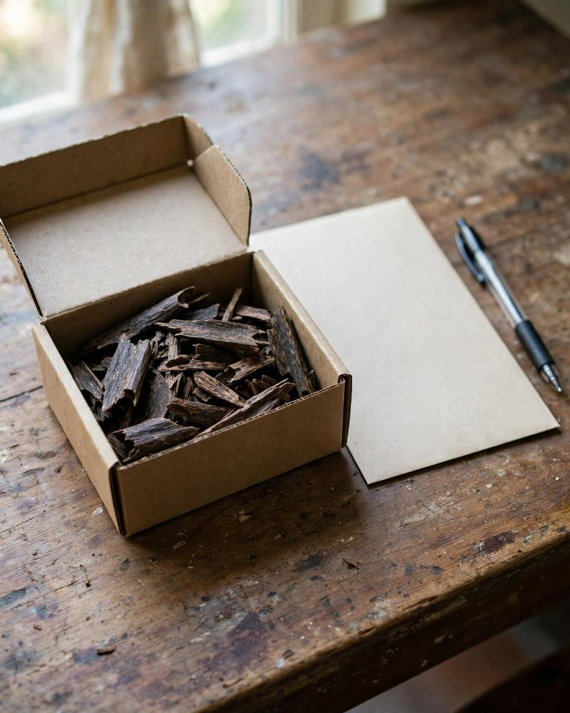

CITES 是《濒危野生动植物种国际贸易公约》，沉香属植物列入附录 II：国际贸易受管制，需要进出口许可证。附录 II 不是禁止贸易，是管制贸易。
附录 II 的意思是：沉香属植物如果不加管制，可能面临灭绝风险。国际贸易需要证明来源合法、有许可证，才能进行。
沉香进出口需要许可证：出口国和进口国都要发证。没有许可证的沉香进出口是违法的，可能被没收、罚款。
个人携带沉香出入境也要注意：少量自用可以携带，但数量、用途要合规。大批量携带要申报、要许可。
国内买卖沉香要合规：人工种植的沉香可以买卖，野生沉香的买卖受限制。买之前问清楚来源：人工还是野生，有没有合法手续。
野生沉香的买卖要特别小心：没有合法手续的野生沉香，买卖是违法的。不要为来路不明的野生沉香付钱。
第一，问来源：人工还是野生，有没有合法手续。第二，问证书：检测报告、产地证明能不能对上。第三，留凭证：发票、合同、证书都留好。
合规购买的沉香，来源清楚、手续齐全、凭证完整。买之前问清楚，买之后留凭证，才能买得放心。法规会变化，买卖之前查一下最新的规定。
术语表在下面的对照表里：20 个新手常遇到的词，每个词一句话解释。买沉香的时候遇到不懂的词，查一下就明白了。
术语表不是标准定义，是通俗解释。遇到商家用术语忽悠你，查一下术语表，心里有数。
| 术语 | 意思 |
|---|---|
| 结香 | 树受伤后分泌树脂、慢慢形成沉香的过程 |
| 油线 | 沉香木质里的树脂纹路，深色线条 |
| 沉水 | 沉香密度大，放在水里能沉下去 |
| 奇楠 | 沉香里的特殊变异，油脂软、香韵凉 |
| 惠安系 | 越南、柬埔寨、老挝等地的沉香，香韵清甜带凉 |
| 星洲系 | 印尼、马来西亚、文莱等地的沉香，香韵醇厚 |
| 土沉 | 树倒在土里结成的沉香，香韵醇厚 |
| 倒架 | 树倒在地上自然结成的沉香 |
| 水沉 | 树沉在水里结成的沉香，香韵凉意足 |
| 白木香 | 国产沉香树的主要树种，广东、海南常见 |
| CMA | 中国计量认证，检测机构的资质，有法律效力 |
| CNAS | 中国合格评定国家认可委员会，检测机构的认可 |
| 沉香四醇 | 沉香的特征成分，含量 ≥0.1% 是硬指标 |
| 泡油 | 造假手段：把木头泡在香精油里冒充沉香 |
| 注胶 | 造假手段：往木头里注胶增加密度、冒充沉水 |
| 一物一证 | 每件沉香对应一份检测证书，编号唯一 |
| 克重 | 手串的重量，同尺寸下越重油脂越丰富 |
| 孔道 | 珠子中间穿绳的孔，要光滑居中 |
| 留香 | 精油、线香的香味持续时间 |
| CITES | 濒危野生动植物种国际贸易公约，沉香属列入附录 II |